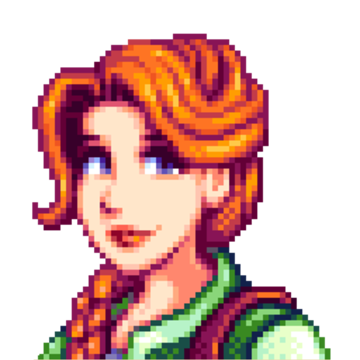
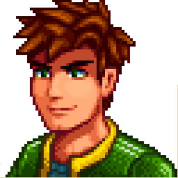
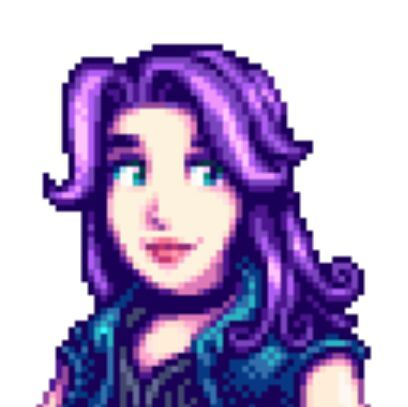

Bachelor and Bachelorette Profiles
-
Leah
 Leah Profile Photo LOCATION: west of Pelican Town
PROFESSION: artist
LOVES: goat cheese, wine, salad, and stir fry
HATES: bread, pizza, and void egg
-
Sebastian
Sebastian Profile Photo LOCATION: west of the mines
PROFESSION: computer programmer
LOVES: void egg, frozen tear, and obsidian
HATES: artisan goods, clay, and eggs
-
Penny
Penny Profile Photo LOCATION: trailer in eastern part of town
PROFESSION: teacher / tutor
LOVES: diamonds, poppy, and roots platter
HATES: alcoholic beverages, rabbit's foot, and hops
-
Elliott

Elliott Profile Photo LOCATION: the beach
PROFESSION: writer
LOVES: duck feathers, lobster, and pomegranate
HATES: salmonberry, quartz, and sea cucumber
-
Haley
Haley Profile Photo LOCATION: the west edge of town
PROFESSION: unemployed
LOVES: sunflowers, pink cake, and fruit salad
HATES: prismatic shard, wild horseradish, and clay
-
Alex
 Alex Profile Photo LOCATION: east end of town
PROFESSION: unemployed
LOVES: complete breakfast and salmon dinner
HATES: holly and quartz
-
Abigail
 Abigail Profile Photo LOCATION: Pierre's General Store
PROFESSION: unemployed
LOVES: amethyst, chocolate cake, and pumpkin
HATES: clay and holly
-
Harvey
Harvey Profile Photo LOCATION: the clinic in Pelican Town
PROFESSION: doctor
LOVES: coffee, wine, and pickles
HATES: coral, spiceberry, and rainbow shell
-
Emily
Emily Profile Photo LOCATION: west end of Pelican Town
PROFESSION: bartender
LOVES: amethyst, cloth, and wool
HATES: fish taco, sashimi, and holly
-
Sam
Sam Profile Photo LOCATION: west end of Pelican Town
PROFESSION: aspiring musician
LOVES: cactus fruit, pizza, and tigerseye
HATES: mayonaise, pickles, and coal
-
Maru
Maru Profile Photo LOCATION: west of the mines
PROFESSION: aspiring scientist / clinic attendent
LOVES: battery packs, diamonds, and gold bar
HATES: honey, pickles, and truffle
-
Shane
Shane Profile Photo LOCATION: west of town at Marnie's Ranch
PROFESSION: grocery store attendant
LOVES: beer, pizza, and pepper poppers
HATES: pickles and quartz